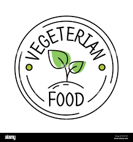

.jfif) Tadka
HOME
ABOUT
CONTACT US.
ORDER NOW.
Tadka
HOME
ABOUT
CONTACT US.
ORDER NOW.

.png)
.png)
VEGETARIAN NON-VEGETARIAN BREAKFAST
>
STARTERS
SHAHI SAMOSA
A samosa (/səˈmoʊsə/) is a fried or baked pastry with a savory filling, including ingredients such as spiced potatoes, onions, and peas. It may take different forms, including triangular, cone, or half-moon shapes, depending on the region.[2][3][4] Samosas are often accompanied by chutney, and have origins in medieval times or earlier.[2] Samosas are a popular entrée, appetizer, or snack in the cuisines of South Asia, the Middle East, Central Asia, East Africa and their diasporas.
PANEER TIKKA
Paneer tikka is an Indian dish made from chunks of paneer marinated in spices and grilled in a tandoor.[1][2] It is a vegetarian alternative to chicken tikka and other meat dishes.[3][4][5] It is a popular dish that is widely available in India and countries with an Indian diaspora.[6][7]
PIZZA
Pizza (Italian: [ˈpittsa], Neapolitan: [ˈpittsə]) is a dish of Italian origin consisting of a usually round, flat base of leavened wheat-based dough topped with tomatoes, cheese, and often various other ingredients (such as various types of sausage, anchovies, mushrooms, onions, olives, vegetables, meat, ham, etc.), which is then baked at a high temperature, traditionally in a wood-fired oven.[1] A small pizza is sometimes called a pizzetta. A person who makes pizza is known as a pizzaiolo
HAMBURGER
A hamburger (or burger for short) is a food consisting of fillings —usually a patty of ground meat, typically beef—placed inside a sliced bun or bread roll. Hamburgers are often served with cheese, lettuce, tomato, onion, pickles, bacon, or chilis; condiments such as ketchup, mustard, mayonnaise, relish, or a "special sauce", often a variation of Thousand Island dressing; and are frequently placed on sesame seed buns. A hamburger topped with cheese is called a cheeseburger.[1]
PASTA
Pasta (US: /ˈpɑːstə/, UK: /ˈpæstə/; Italian pronunciation: [ˈpasta]) is a type of food typically made from an unleavened dough of wheat flour mixed with water or eggs, and formed into sheets or other shapes, then cooked by boiling or baking. Rice flour, or legumes such as beans or lentils, are sometimes used in place of wheat flour to yield a different taste and texture, or as a gluten-free alternative. Pasta is a staple food of Italian cuisine.[1][2]
CURRY
VEG CURRY
Curry is very popular in the United Kingdom, with a curry house in nearly every town.[38][39] Such is the popularity of curry in the United Kingdom, it has frequently been called its "adopted national dish".[40] It was estimated that in 2016 there were 12,000 curry houses, employing 100,000 people and with annual combined sales of approximately £4.2 billion.[41]
TANDOORI CURRY
Curry spread to South Africa with the migration of people from the Indian subcontinent to the region in the colonial era. African curries, Cape Malay curries and Natal curries include the traditional Natal curry, the Durban curry, bunny chow, and roti rolls. South African curries appear to have been founded in both KwaZulu-Natal) and the Western Cape, while other curries developed across the country over the late 20th century and early 21st century to include ekasi, coloured, and Afrikaner curries.[36] Durban has the largest single population of Indians outside of India.[37] Bunny chow or a "set", a South African standard, consists of either lamb, chicken or bean curry poured into a tunnelled-out loaf of bread to be eaten with one's fingers.[36][37]
CHICKEN CURRY
Malaysian cuisine may have initially incorporated curries via the Indian population, but it has become a staple among the Malay and Chinese populations there. Malaysian curries typically use turmeric-rich curry powders, coconut milk, shallots, ginger, belacan (shrimp paste), chili peppers, and garlic. Tamarind is also often used. Rendang is drier and contains mostly meat and more coconut milk than a conventional Malaysian curry; it was mentioned in Malay literature in the 1550s by Hikayat Amir Hamzah.[33]
PAKODA CURRY
Curry spread to other regions of Asia. Although not an integral part of Chinese cuisine, curry powder is added to some dishes in the southern part of China. The curry powder sold in Chinese grocery stores is similar to Madras curry powder but with addition of star anise and cinnamon.[25] The former Portuguese colony of Macau has its own culinary traditions and curry dishes, including Galinha à portuguesa and curry crab. Portuguese sauce is a sauce flavoured with curry and thickened with coconut milk.[26]
MASALA CURRY
ndia is the home of curry, and many Indian dishes are curry-based, prepared by adding different types of vegetables, lentils, or meats. The content of the curry and style of preparation vary by region. Most curries are water-based, with occasional use of dairy and coconut milk. Curry dishes are usually thick and spicy and are eaten along with steamed rice and a variety of Indian breads. The popular rogan josh, for example, from Kashmiri cuisine, is a wet curry of lamb with a red gravy coloured by Kashmiri chillies and an extract of the red flowers of the cockscomb plant (mawal).[22] Goshtaba (large lamb meatballs cooked in yoghurt gravy) is another curry dish from the Wazwan tradition occasionally found in Western restaurants.[23]
VEGETARIAN
SHAHI SAMOSA
A samosa (/səˈmoʊsə/) is a fried or baked pastry with a savory filling, including ingredients such as spiced potatoes, onions, and peas. It may take different forms, including triangular, cone, or half-moon shapes, depending on the region.[2][3][4] Samosas are often accompanied by chutney, and have origins in medieval times or earlier.[2] Samosas are a popular entrée, appetizer, or snack in the cuisines of South Asia, the Middle East, Central Asia, East Africa and their diasporas.
PANEER TIKKA
Paneer tikka is an Indian dish made from chunks of paneer marinated in spices and grilled in a tandoor.[1][2] It is a vegetarian alternative to chicken tikka and other meat dishes.[3][4][5] It is a popular dish that is widely available in India and countries with an Indian diaspora.[6][7]
PIZZA
Pizza (Italian: [ˈpittsa], Neapolitan: [ˈpittsə]) is a dish of Italian origin consisting of a usually round, flat base of leavened wheat-based dough topped with tomatoes, cheese, and often various other ingredients (such as various types of sausage, anchovies, mushrooms, onions, olives, vegetables, meat, ham, etc.), which is then baked at a high temperature, traditionally in a wood-fired oven.[1] A small pizza is sometimes called a pizzetta. A person who makes pizza is known as a pizzaiolo
HAMBURGER
A hamburger (or burger for short) is a food consisting of fillings —usually a patty of ground meat, typically beef—placed inside a sliced bun or bread roll. Hamburgers are often served with cheese, lettuce, tomato, onion, pickles, bacon, or chilis; condiments such as ketchup, mustard, mayonnaise, relish, or a "special sauce", often a variation of Thousand Island dressing; and are frequently placed on sesame seed buns. A hamburger topped with cheese is called a cheeseburger.[1]
Pasta (US: /ˈpɑːstə/, UK: /ˈpæstə/; Italian pronunciation: [ˈpasta]) is a type of food typically made from an unleavened dough of wheat flour mixed with water or eggs, and formed into sheets or other shapes, then cooked by boiling or baking. Rice flour, or legumes such as beans or lentils, are sometimes used in place of wheat flour to yield a different taste and texture, or as a gluten-free alternative. Pasta is a staple food of Italian cuisine.[1][2]